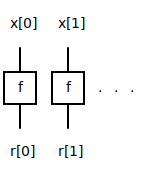
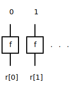
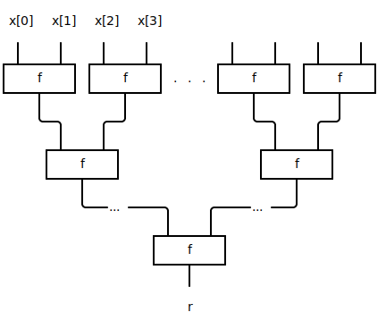
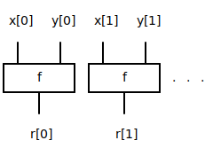
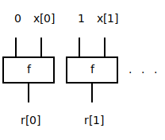

data.array ≡
Operations on arrays.
template <typename T, auto N> using array = T[N] §source
template <typename R, typename T, auto N> inline R[N] inclusive_scan(T[N] input, (R, R) -> R AssociativeFn) §source
Perform an inclusive scan on the given array.

Example
>>> inclusive_scan<uint8>({1, 2, 3}, add);
{1, 3, 6}template <typename R, typename T, auto N> inline R[N] prefix_sum(T[N] input) §source
Compute the prefix sum of the given array.
Examples
>>> prefix_sum<uint1>({1});
{1}
>>> prefix_sum<uint3>({0, 1, 2, 3});
{0, 1, 3, 6}template <auto N, typename T> inline optional<T>[N] partial_sort(T x, (T, T) -> bool cmp, bool is_last) §source
An inline function that returns the smallest N elements seen in a
sequence of elements so far, provided one at a time over multiple calls.
Internally, this is achieved by using a pipeline of N atomic stages each
of which accepts an element, compares it with its current smallest, and
swaps the two if the provided lambda returns true. The remaining element
is then passed onto the next stage, or discarded if no stage follows.
This iterative nature is suitable for use inside a
[[pipelined]] function which would supply one piece of data
per cycle (for example, extracted from a memory).
One use case for this component would be as part of a multi-pass sorter; the first pass over the dataset would extract the smallest N elements, and by preventing those returned elements from being considered again each following pass would extract the next smallest N elements until the dataset is fully sorted.
Example
const auto N = 6;
uint8[N] input = {5, 1, 3, 2, 7, 3};
optional<uint8>[6] sorted = pipelined_last(N, [input, N](index_t<N> tid)
{
return partial_sort<6>(input[tid], less_than<uint8>, tid == N - 1);
});
print(sorted);
// {{true, 1}, {true, 2}, {true, 3}, {true, 3}, {true, 5}, {true, 7}}Parameters
-
auto NMaximum number of elements to be extracted.
-
typename TType of each element.
Arguments
-
T x -
(T, T) -> bool cmp
Binary function that returns true when the lhs should be swapped and stored.
-
bool is_last
Indicates a call with the last element in the sequence so that state can be reset for the next call.
template <auto N, typename T> inline T[N] bitonic_sort(T[N] x, (T, T) -> bool cmp) §source
Bitonic sorting network. Sorts the passed array such that cmp(x[i], x[i + 1]) is true for all items.
Example
>>> bitonic_sort({4, 2, 3, 1}, less_than<uint32>);
{1, 2, 3, 4}template <typename T, auto N> inline optional<T> last_valid(optional<T>[N] x) §source
Given an array of optional<T>, return the last
(highest array index) item with is_valid true. If there are
no items with is_valid true, then the returned
optional<T> has is_valid set to
false.
Examples
>>> last_valid<uint8>({{false, 0xAB}, {false, 0x22}});
{false, 0xAB}
>>> last_valid<uint8>({{true, 0xCD}, {true, 0xFF}});
{true, 0xFF}template <typename T, auto I, auto J> inline T[J][I] transpose(T[I][J] src) §source
Transpose rows and columns in a 2-dimensional array.
template <auto M, typename T, auto N, typename U> inline T[M] shift_array_right(T[N] data, U amount) §source
Shift the elements of an arbitrary-typed array right by the given number of positions, with the possibility of returning a different number of elements as the input array. Once the input array has been exhausted, default (zero)-initialized elements will be shifted in from the end of the array.
Examples
Shift 5 right by 0:
>>> shift_array_right<5>({0, 1, 2, 3, 4}, 0);
{0, 1, 2, 3, 4}Shift 5 right by 2 and return 4:
>>> shift_array_right<4>({0, 1, 2, 3, 4}, 2);
{2, 3, 4, 0}Shift 5 right by 10 and return 4:
>>> shift_array_right<4>({0, 1, 2, 3, 4}, 10);
{0, 0, 0, 0}Parameters
-
auto MNumber of output elements.
-
typename TData type of input array.
-
auto NNumber of input elements.
-
typename UData type for shift amount. Must be unsigned. Care should be taken to minimize the bitwidth of U where posible since it affects the size of the multiplexers and hence area.
template <auto M, typename T, auto N> inline T[(N - M)] drop(T[N] x) §source
Drop first M elements of an array
Examples
>>> drop<2>({0, 1, 2, 3, 4});
{2, 3, 4}template <typename T, auto N> inline T[(N - 1)] tail(T[N] x) §source
Return an array containing all but the first element
Examples
>>> tail({0, 1, 2, 3, 4});
{1, 2, 3, 4}template <auto M, typename T, auto N> inline T[M] take(T[N] x) §source
Take first M elements of an array
Examples
>>> take<2>({0, 1, 2, 3, 4});
{0, 1}template <typename T, auto N> inline T[(N - 1)] init(T[N] x) §source
Return the array without the last element
Examples
>>> init({0, 1, 2, 3, 4});
{0, 1, 2, 3}template <typename T, auto N> inline T[((2 * N) - 1)] intersperse(T a, T[N] x) §source
Intersperse a value between elements of an array
Examples
>>> intersperse(-1, {0, 1, 2, 3, 4});
{0, -1, 1, -1, 2, -1, 3, -1, 4}template <auto M, typename U, typename T, auto N> inline T[M] shift_array_left(T[N] data, U amount) §source
Shift the elements of an arbitrary-typed array left by the given number of positions, with the possibility of returning a different number of elements as the input array. Once the input array has been exhausted, default (zero) -initialized elements will be shifted in from the beginning of the array.
Examples
Shift 5 left by 0:
>>> uint32[5] a = shift_array_left({0, 1, 2, 3, 4}, 0);
{0, 1, 2, 3, 4}Shift 5 left by 2 and return 4:
>>> uint32[4] a = shift_array_left({0, 1, 2, 3, 4}, 2);
{0, 0, 0, 1}Shift 5 left by 10 and return 4:
>>> uint32[4] a = shift_array_left({0, 1, 2, 3, 4}, 10);
{0, 0, 0, 0}Parameters
-
auto MNumber of output elements.
-
typename UData type for shift amount. Must be unsigned. Care should be taken to minimize the bitwidth of U where possible since it affects the size of the multiplexers and hence area.
-
typename TData type of input array.
-
auto NNumber of input elements.
template <auto M, typename T, auto N, typename U> inline T[M] rotate_array_right(T[N] data, U amount) §source
Rotate the elements of an arbitrary-typed array right by the given
number of positions, with the possibility of returning a different
number of elements as the input array. Elements that are rotated past
the beginning of the array will wrap-around and re-appear at the end of
the array. If this wrap-around behaviour is not strictly necessary,
consider if shift_array_right may be more efficient.
Examples
Rotate 5 right by 0:
>>> uint32[5] a = rotate_array_right({0, 1, 2, 3, 4}, 0);
{0, 1, 2, 3, 4}Rotate 5 right by 2 returning 4:
>>> uint32[4] a = rotate_array_right({0, 1, 2, 3, 4}, 2);
{ 2, 3, 4, 0}Parameters
-
auto MNumber of output elements.
-
typename TData type of input array
-
auto NNumber of input elements.
-
typename UData type for rotate amount. Must be unsigned. Bitwidth for this type must be no more than
clog2(N). Care should be taken to minimize this bitwidth where possible since it affects the size of the multiplexers and hence area.
template <auto M, typename T, auto N, typename U> inline T[M] rotate_array_left(T[N] data, U amount) §source
Rotate the elements of an arbitrary-typed array left by the given
number of positions, with the possibility of returning a different
number of elements as the input array. Elements that are rotated past
the end of the array will wrap-around and re-appear at the beginning of
the array. If this wrap-around behaviour is not strictly necessary,
consider if shift_array_left may be more efficient.
Examples
Rotate 5 left by 0:
>>> uint32[5] a = rotate_array_left({0, 1, 2, 3, 4}, 0);
{0, 1, 2, 3, 4}Rotate 5 left by 2 returning 4:
>>> uint32[4] a = rotate_array_left({0, 1, 2, 3, 4}, 2);
{3, 4, 0, 1}Parameters
-
auto MNumber of output elements.
-
typename TData type of input array.
-
auto NNumber of input elements.
-
typename UType for rotate amount. Must be unsigned. Bitwidth of this type must be no more than
clog2(N). Care should be taken to minimize this bitwidth where possible since it affects the size of the multiplexers and hence area.
template <typename T, auto N> inline auto map((T) -> auto f, T[N] x) §source
Map array of input values to result values.
Examples
>>> map([](bool b){ return !b; }, {true, false, false});
{false, true, true}
>>> map([](uint32 a){ return a + 1; }, {1, 2, 3});
{2, 3, 4}template <auto N> inline auto map_indices((index_t<N>) -> auto f) §source
Map array of indices to result values.
Examples
>>> map_indices<3>(id)
{0, 1, 2}template <typename T, auto N> inline auto foldr((T, T) -> T f, T[N] x) §source
Right-associative fold of an array.
When f is associative reduce is more
efficient.
Examples
>>> foldr(f, {0, 1, 2, 3})
f(0, f(1, f(2, 3)));
>>> foldr(f, {1})
1template <typename T, auto N> inline auto foldl((T, T) -> T f, T[N] x) §source
Left-associative fold of an array.
When f is associative reduce is more
efficient.
Examples
>>> foldl(f, {0, 1, 2, 3})
f(3, f(2, f(1, 0)));
>>> foldl(f, {1})
1template <typename T, auto N> inline auto reduce((T, T) -> T f, T[N] x) §source
Implement a binary reducer tree using a function to reduce a pair of inputs.
Examples
>>> reduce(add, {0x9, 0x2, 0x5});
0x10
>>> reduce<bool>([](bool x, bool y){ return x || y; }, {false, true, false});
truetemplate <typename T, auto N, typename R> inline R map_reduce((T) -> R map_fn, (R, R) -> R reduce_fn, T[N] x) §source
Implements map-reduce. Inputs are first mapped into the appropriate result type, and then reduced to a single output using a binary reduction tree.
Example
map_reduce
( [](uint8 a){ return a % 2 == 0; }
, [](bool x, bool y){ return x && y; }
, {2, 4, 6}
);
// true; all values are even.template <auto N> inline bool or(bool[N] x) §source
Returns true if any of the elements are true.
Examples
>>> or({true})
true
>>> or({false})
false
>>> or({true,true,false})
truetemplate <auto N> inline bool and(bool[N] x) §source
Returns true if all of the elements are true.
Examples
>>> and({true})
true
>>> and({false})
false
>>> and({true,true,false})
falsetemplate <typename T, auto N> inline bool any((T) -> bool predicate, T[N] x) §source
Returns true if any of the elements of array satisfies the predicate.
Examples
>>> any([](uint8 x){ return x > 3; }, {1, 2, 3});
false
>>> any([](uint8 x){ return x > 3; }, {1, 2, 3, 4});
truetemplate <typename T, auto N> inline bool all((T) -> bool predicate, T[N] x) §source
Returns true if all elements of the array satisfy the predicate.
Examples
>>> all([](uint8 x){ return x < 3; }, {1, 2});
true
>>> all([](uint8 x){return x < 3; }, {1, 2, 3});
falsetemplate <typename S, typename T, auto N> inline auto zip_with((S, T) -> auto f, S[N] x, T[N] y) §source
Combines elements of two arrays using specified function.
Examples
>>> zip_with(add, {1, 2, 3}, {4, 5, 6});
{5, 7, 9}
>>> zip_with(make_optional<uint8>, {true, true, false}, {1, 2, 3});
{{true, 1}, {true, 2}, {false, 3}}template <typename T, auto N> inline auto zip_with_indices((index_t<N>, T) -> auto f, T[N] x) §source
Map array of input values and their indices to result values.
Example
>>> zip_with_indices( [](index_t<4> i, uint8 byte)
{
return even(i) ? 0xFF : byte;
}
, {0x00, 0xAB, 0xBC, 0xDE}
)
{0xFF, 0xAB, 0xFF, 0xDE}template <typename T1, typename T2, auto N> inline pair<T1, T2>[N] zip(T1[N] x, T2[N] y) §source
Combines two arrays into an array of pairs.
Example
>>> zip({true, false, false}, {1, 2, 3});
{{true, 1}, {false, 2}, {false, 3}}template <auto N, typename T = index_t<N>> inline T[N] indices() §source
Returns array with each element value equal to its index.
Example
>>> indices<4>();
{0, 1, 2, 3}
>>> uint32[7] a = indices();
{0, 1, 2, 3, 4, 5, 6}Parameters
-
auto NArray length
-
typename T = index_t<N>
Element type
template <typename T, auto N> inline auto minimum(T[N] x) §source
Returns minimum element from an array of integers.
Example
>>> minimum({5, 3, 87, 22});
3template <typename T, auto N> inline auto maximum(T[N] x) §source
Returns maximum value in the array of integers.
Example
>>> maximum({5, 3, 87, 22});
87template <typename R, typename T, auto N> inline R sum(T[N] x) §source
Sum elements in an array.
Example
>>> sum<uint9>({0xFF, 0x2F, 0x5E});
0x18Ctemplate <typename T, auto N> inline optional<T> first_valid(optional<T>[N] x) §source
Given an array of optional<T>, return the first
(lowest array index) item with is_valid true. If there are
no items with is_valid true, then the returned
optional<T> has ‘is_valid’ set to false.
Examples
>>> first_valid<uint8>({{false, 0xAB}, {false, 0x22}});
{false, 0x22}
>>> first_valid<uint8>({{true, 0xCD}, {true, 0xFF}});
{true, 0xCD}template <typename T, auto N, auto M> inline T[M] copy_array( T[N] source, index_t<N> s_first, T[M] destination, index_t<M> d_first, count_t<N> elements_to_copy ) §source
Copies an array or creates a subset of an array.
Example
>>> copy_array({1, 2, 3, 4}, 1, {0xFF, 0xFF, 0xFF}, 0, 2);
{2, 3, 0xFF}Parameters
-
typename T -
auto NSource array length.
-
auto MDestination array length.
Arguments
-
T[N] source -
index_t<N> s_first
The index of the first element of the source array to copy to the destination array.
-
T[M] destination -
index_t<M> d_first
The index in the destination array to copy the first element to.
-
count_t<N> elements_to_copy
The number of array elements to copy from source to destination.
template <typename T, auto N> inline optional<T>[N] unique_by((T, T) -> bool equality_fn, T[N] xs) §source
De-duplicate array elements with user-supplied equality predicate. For each element e, check the previous elements for duplicates. If there are any duplicates, mark element e as invalid. Returns an array of optionals where all valid elements are unique.
Example
>>> unique_by(order::equal<uint32>, {0, 1, 0});
{{true, 0}, {true, 1}, {false, 0}}Arguments
-
(T, T) -> bool equality_fn
Equality predicate.
-
T[N] xs
template <typename T, auto N> inline optional<T>[N] unique(T[N] xs) §source
De-duplicate array elements. Similar to unique_by but
uses the == operator. For each element e, check the
previous elements for duplicates. If there are any duplicates, mark
element e as invalid. Returns an array of optionals where all valid
elements are unique.
Example
>>> unique({0, 1, 0});
{{true, 0}, {true, 1}, {false, 0}}template <typename T, auto N> inline bool equal_by((T, T) -> bool equality_fn, T[N] xs, T[N] ys) §source
Element-wise equality comparison of arrays using specified function.
Examples
>>> equal_by(optional::equal<uint8>, {{true, 0xFF}}, {{false, 0xFF}});
false
>>> equal_by(pair::equal<uint8, bool>, {{0xAB, true}, {0xCD, false}}, {{0xAB, true}, {0xCD, false}});
truetemplate <typename T, auto N> inline bool equal(T[N] xs, T[N] ys) §source
Element-wise comparison of arrays for equality using
==.
Examples
>>> equal({0x22, 0x1E, 0xFA}, {0x22, 0x1E, 0xFA});
true
>>> equal({true, false}, {false, false});
falsetemplate <typename L, typename R, typename T, auto N> inline pair<L[N], R[N]> unzip_with((T) -> tuple2<L, R> f, T[N] xs) §source
Transform an array into a pair of arrays using a projection.
Examples
>>> unzip_with<bool, uint8>(optional_to_pair<uint8>, {{true, 0x33}, {false, 0xFF}});
{{true, false}, {0x33, 0xFF}}Parameters
-
typename LType of first projection of T.
-
typename RType of second projection of T.
-
typename TInput array element type.
-
auto NArray length.
Arguments
-
(T) -> tuple2<L, R> f
Mapping from input array element to pair of result elements.
-
T[N] xs
template <typename L, typename R, auto N> inline pair<L[N], R[N]> unzip(tuple2<L, R>[N] xs) §source
Transform an array of pairs into a pair of arrays.
Example
>>> unzip<uint8, bool>({{0xAF, false}, {0xCE, true}, {0x12, false}});
{{0xAF, 0xCE, 0x12}, {false, true, false}}template <auto N, typename T> inline T[N] repeat(T value) §source
Construct an array with all elements equal to the same value
Example
>>> repeat<4>(false);
{false, false, false, false}
>>> uint8[5] a = repeat(0);
{0, 0, 0, 0, 0}template <typename T> inline T[1] singleton(T value) §source
Construct array of one element with specified value
Example
>>> singleton(false);
{false}template <auto N, typename T> inline T[N] iterate((T) -> T f, T x) §source
Return an array of repeated applications of f to
x.
prop> iterate(f, x) == {x, f(x), f(f(x), ...}Example
>>> iterate<4>([](bool x){ return !x; }, true)
{true, false, true, false}
>>> bool[5] a = iterate([](bool x){ return !x; }, true);
{true, false, true, false, true}template <typename T, auto N> inline auto at(T[N] x, index_t<N> i) §source
Access element i. Equivalent to x[i]. If
i is greater than or equal to N then a
assert is triggered.
Example
>>> at({0, 1, 2, 3}, 2)
2template <typename T, auto N> inline auto front(T[N] x) §source
Return the first element in the array. Equivalent to
x[0].
Example
>>> front({0, 1, 2})
0template <typename T, auto N> inline auto back(T[N] x) §source
Return the last element in the vector. Equivalent to
x[N - 1].
Example
>>> back({0, 1, 2})
2